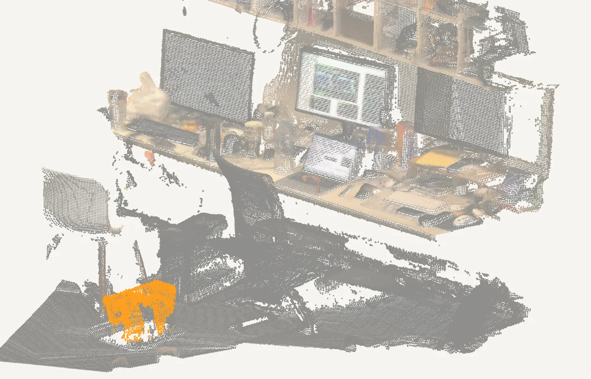
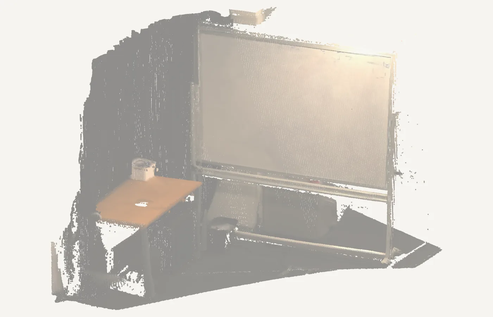
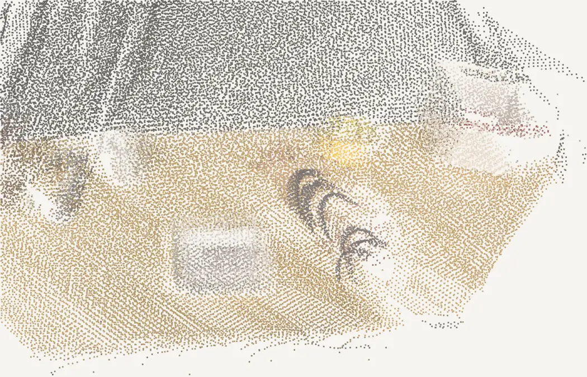
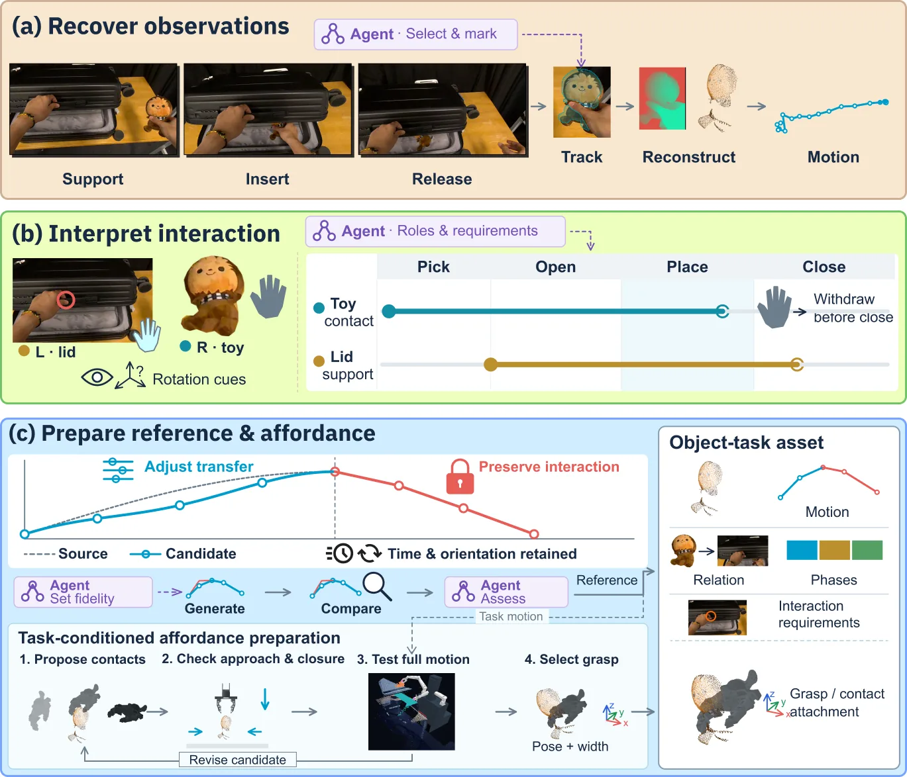
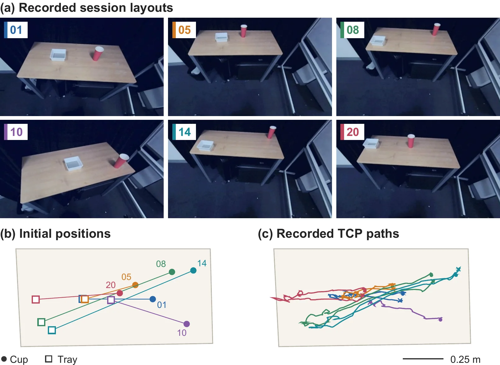
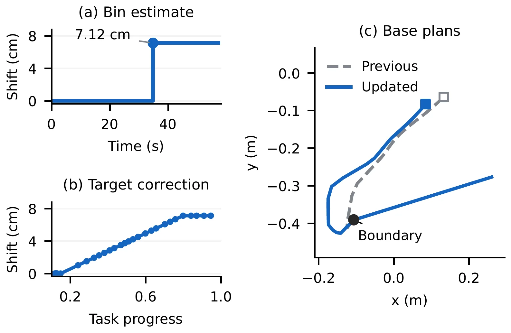
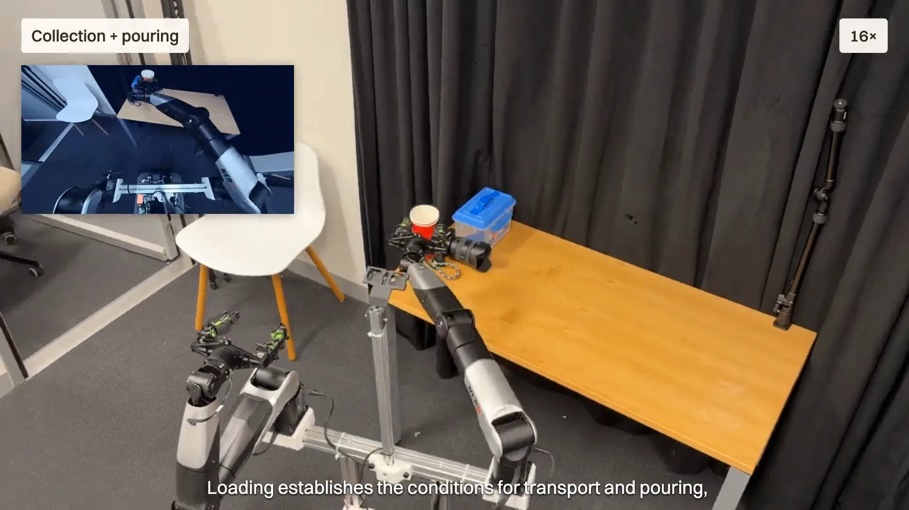

SAKISkill Assembly and Kinematic Imitation from Human Videos for Long-Horizon Mobile Manipulation
SAKI in brief
- Input
- One human video per skill
- Kept from the video
- Object motion, grasp, persistent contact, how the action ends
- Output
- Coordinated base, arm and gripper motion on a mobile robot
- Shown here
- Reuse in new layouts, assembled long-horizon tasks, contact-rich tasks
One human video per skill
Learn the interaction
SAKI recovers object motion from a single, imperfect demonstration and keeps what the task needs: how the object is held, where contact persists and how the action ends. The robot’s own motion is solved later, in its own scene.





Works in layouts it has never seen
Reuse across scenes
A frozen skill is bound to the objects in front of the robot. Whole-body kinematic imitation plans base, arm and gripper motion for the new layout, and accepted visual updates revise what remains without undoing committed motion.




Separate skills, one longer task
Tidy and wipe
Skills from independent demonstrations are selected, ordered and bound to objects in a shared workspace. Scene estimates carry across skill boundaries, and each stage starts from the robot configuration the previous one left.
Contact held through the whole interaction
Demonstration → robot
Some interactions are defined by what happens after the grasp. SAKI keeps the eraser pressed and aligned to the board, couples a door handle to the door’s motion, and holds a lid open with one arm while the other places an object.
Wipe the whiteboard. The eraser stays pressed and aligned to the board as it moves.
Turn the handle and open the door. The grasp on the handle is coupled to the door’s motion.
Hold the lid, place inside, close. One arm keeps the lid open until the other has withdrawn.
Demonstration and robot run are separate recordings, shown side by side, not synchronised.
How SAKI works

Assemble
Select, order and bind object-task assets to the goal and the current scene.
Imitate
Optimise whole-body motion so the object follows its scene-grounded targets.
Correct
Keep object state across viewpoints and revise remaining targets from new observations.
The full film
Every task above, in context. 2 min 59 s, narrated, with captions.

Play the SAKI filmRead the transcript
0:05 The problem. Each skill uses just one demonstration video, despite noise, viewpoint changes and occlusions. The robot works in a different scene, with its own body and new object locations. How can it preserve the interaction and connect these demonstrations into a complete task?
0:21 Learn the interaction. We recover object motion from human video and prepare reusable skills. Each skill retains the interaction that matters: how an object is held, where contact is maintained, and how the action ends.
0:33 Reuse across scenes. The interaction stays reusable while robot motion adapts to the current scene. Object roles locate the targets, and coordinated base and arm motion realises the task. New observations can revise the remaining motion.
0:50 Assemble a task. These skills can be selected, ordered, and bound to objects in a shared workspace. Can disposal, tape placement, and wiping then become stages of one connected mobile task.
1:05 Tidying and wiping. Separate demonstrations can form one continuous task. Skill boundaries retain scene context as the robot moves between objects. Each stage continues from the preceding robot configuration. Different interaction requirements are handled within the same sequence. Retained scene estimates provide the context for the next action.
1:33 Collection and pouring. Long-horizon tasks connect object interactions across locations. Loading establishes the conditions for transport and pouring, linking several skills into one continuous execution.
1:45 Multi-location collection. One arm keeps hold of the basket while the other collects objects. The robot carries the growing collection between tables, reusing the same interaction at successive locations.
2:03 Box opening and placement. Some tasks require overlapping roles. Bimanual coordination lets one arm maintain support while the other manipulates an object. Contact roles overlap, and support persists until the other arm has safely withdrawn.
2:22 Whiteboard wiping. Wiping requires contact to persist as the tool moves across the surface. The transferred skill preserves tool alignment while the robot adapts its motion to the scene.
2:43 Door opening. Door opening couples engagement with the handle to the motion of the door, extending the interaction beyond the initial grasp.
2:52 Closing. SAKI connects reusable human interactions with scene-dependent robot motion, enabling longer mobile manipulation tasks.
Abstract
Learning from human videos offers a promising route to acquiring diverse manipulation skills. Extending this capability beyond tabletop settings to long-horizon mobile manipulation requires adapting and composing demonstrated interactions across changing scenes and robot configurations. We present Skill Assembly and Kinematic Imitation (SAKI), a framework connecting human-video skill acquisition, cross-demonstration assembly and closed-loop whole-body execution.
SAKI prepares reusable object-centric skills that preserve task-critical interactions while allowing transfer paths to adapt. Given a goal and supplied task dependencies, it selects and orders skills, binds their object roles to the current scene, and carries scene estimates and robot configuration between successive skills. Whole-body kinematic imitation generates coordinated base, arm and gripper motion. During execution, persistent object estimates maintain task references across viewpoint changes, while visual feedback updates remaining trajectories.
Real-robot experiments demonstrate skill reuse across layouts and the composition of independently demonstrated interactions into continuous mobile tasks, including tidying and wiping. Ablation results show that task-conditioned reference preparation substantially improves long-horizon task completion with whole-body optimisation and visual feedback held fixed.
Cite SAKI
@article{lu2026saki,
title = {{SAKI}: Skill Assembly and Kinematic Imitation from Human Videos
for Long-Horizon Mobile Manipulation},
author = {Lu, Yijie and Zhao, James and Zhi, Weiming},
journal = {arXiv preprint arXiv:2609.36031},
year = {2026},
eprint = {2609.36031},
archivePrefix = {arXiv},
primaryClass = {cs.RO}
}Reusable interactions.
Connected tasks.